Dagusha VII / ADA IV
Modellazione 3D e realizzazione del modello in scala 1:100 dello yacht Dagusha VII, in costruzione presso il cantiere nautico turco ADA Yacht Works.
Modellazione 3D e realizzazione del modello in scala.
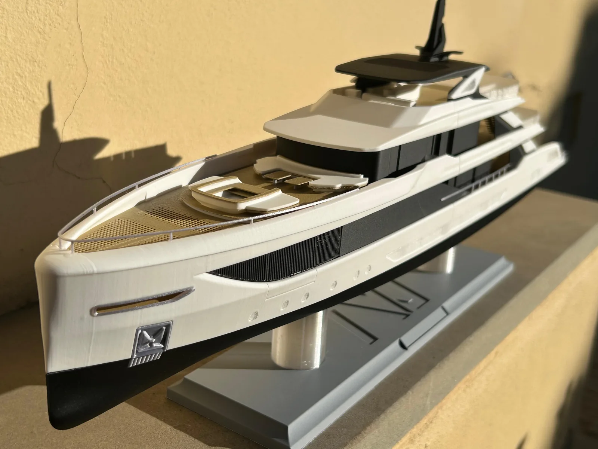
- Scala
- 1:100
- Studio
- Luca Dini Design & Architecture
- Dove e quando
- Firenze, 2026
- Materiale
- PLA, PETG
- Tecnologia
- Stampa 3D FDM
Un modello in scala per l’armatore.
Ho curato la modellazione 3D e la realizzazione del modello in scala 1:100 dello yacht Dagusha VII, in costruzione presso il cantiere nautico turco ADA Yacht Works e disegnato dallo studio Luca Dini Design & Architecture.
Il modello è stato realizzato come omaggio per l’armatore, in visita allo studio Luca Dini per la definizione degli ultimi dettagli progettuali.
Dal modello digitale allo yacht in scala.
DA AGGIUNGERE
- 01
Modellazione 3D
DA AGGIUNGERE
- 02
Produzione FDM
DA AGGIUNGERE
- 03
Assemblaggio e finitura
DA AGGIUNGERE
Il progetto, da vicino.
Viste d’insieme e dettagli.
Seleziona un’immagine per ingrandirla.
{kind=link}
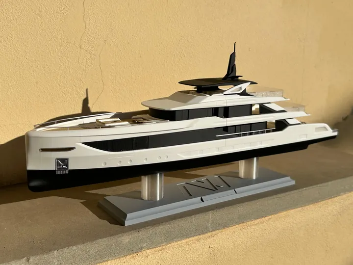
{kind=link}
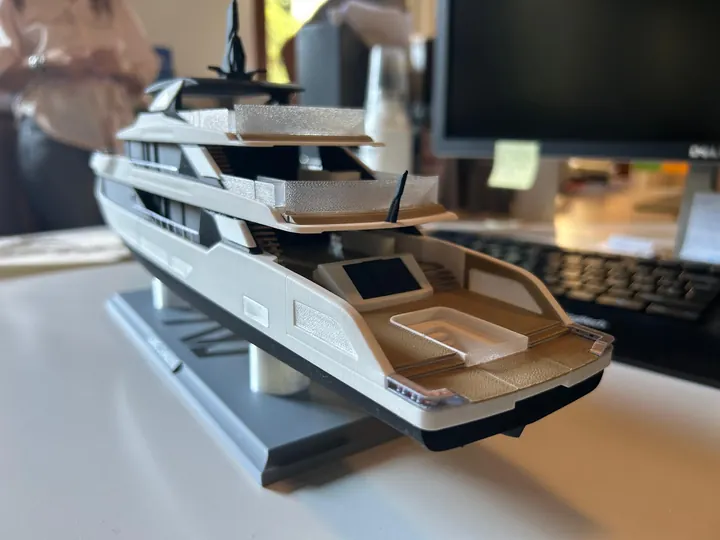
{kind=link}
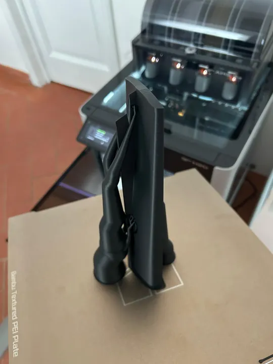
{kind=link}
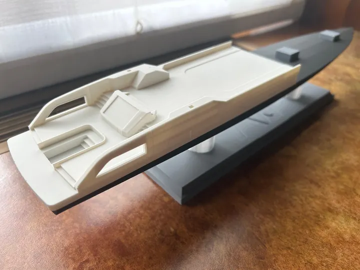
{kind=link}
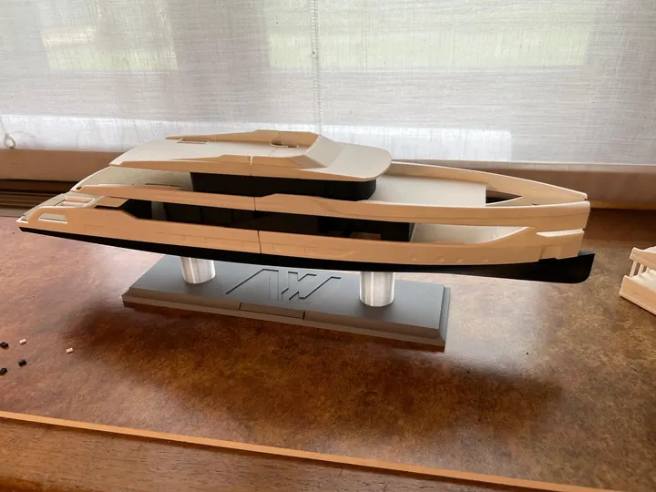
{kind=link}
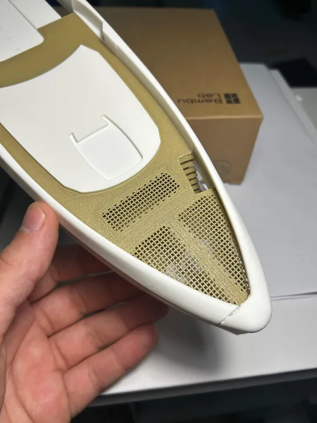
{kind=link}
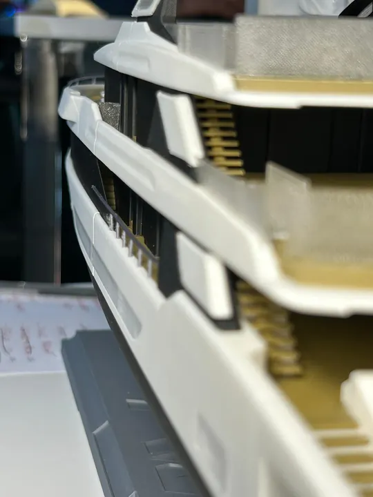
{kind=link}
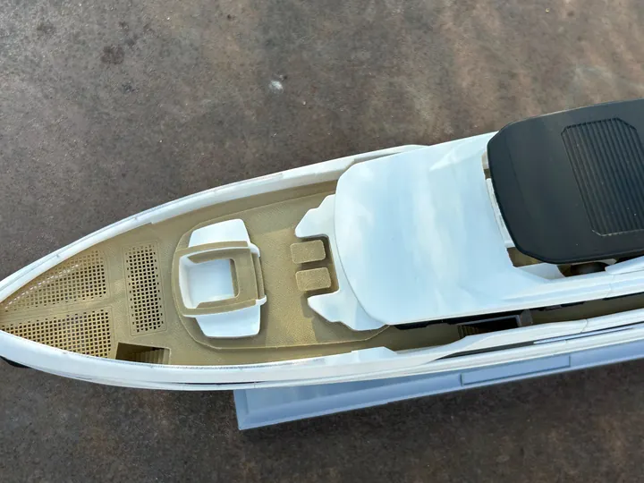
{kind=link}
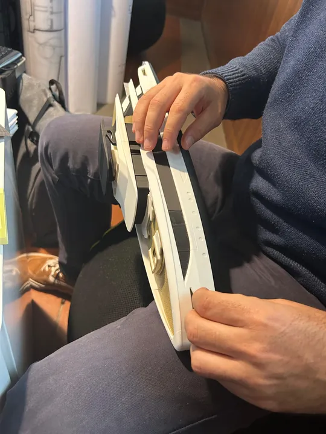
{kind=link}
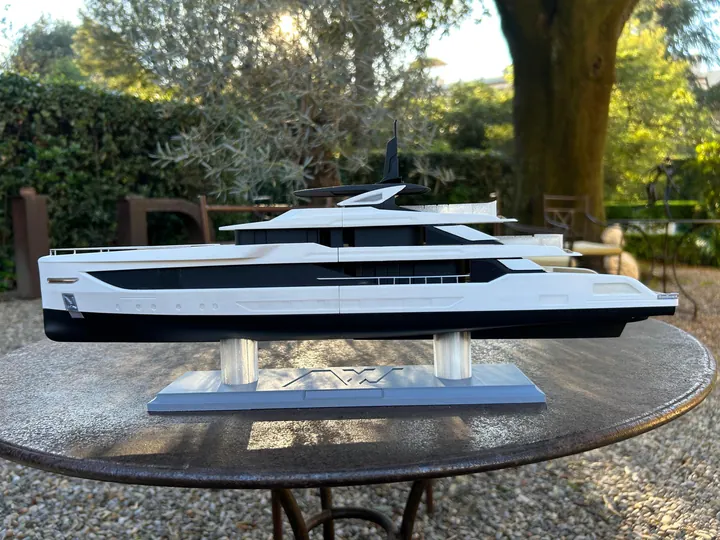
{kind=link}
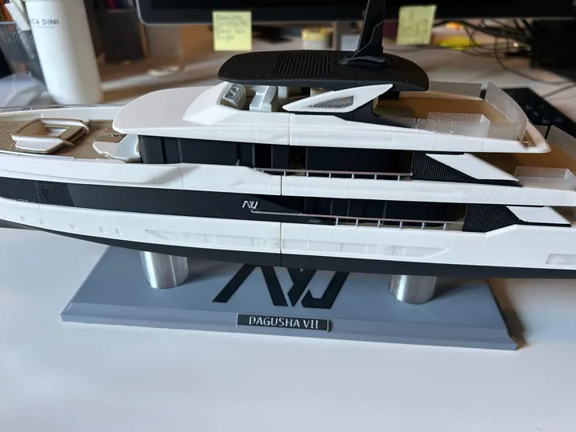
Hai un’idea da sviluppare?
Ogni progetto inizia da una conversazione.